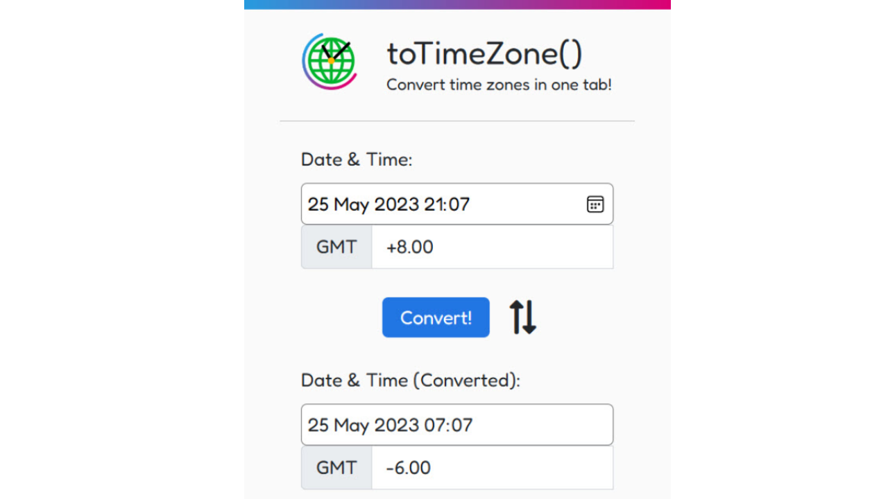

Back to Projects

toTimeZone() is a browser extension developed by Raymond Wangsa Putra and myself for the 48-hour Microsoft Learn Student Ambassadors' (MLSA) Microsoft Edge Add-on hackathon. Determined to resolve the issue of confusion surrounding meeting times in the MLSA community as a result of differing time zones, we decided to create a simple yet useful time zone converter. toTimeZone() clinched third place in the hackathon.
As the frontend developer of the pair, I designed the add-on's UI in Figma and implemented it in HTML and CSS.